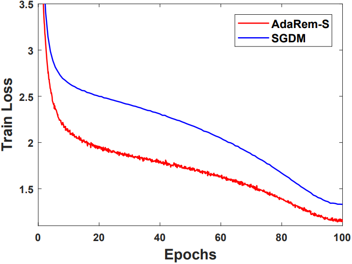

Jie Liu (刘杰)
Hello! I'm currently a first-year Ph.D. student at MMLab, The Chinese University of Hong Kong, supervised by Prof. Wanli Ouyang. Before embarking on my Ph.D. journey, I earned both my Master's degree in Software Engineering in 2023 and my Bachelor's degree in Computer Science and Technology in 2020 from Beihang University. Throughout my academic journey, I've had the privilege of collaborating closely with Prof. Dong Xu and Prof. Yaodong Yang.
I've also interned at SenseTime and Shanghai AI Lab.
My primary research interests are in the fields of Large Language Models and Reinforcement Learning.
News
| 2023.08: | Become a Ph.D. student at MMLab in the Chinese University of Hong Kong. |
|---|---|
| 2023.04: | One Paper on Autonomous Driving (ASAP-RL) is accepted at RSS 2023! |
| 2022.11: | One Paper on Multi-agent RL (ACE) is accepted at AAAI 2023! |
| 2021.03: | Inception Convolution is accepted at CVPR 2021 as an oral paper! |
Selected Publications
-
 ECAI
Theoretically Guaranteed Policy Improvement Distilled from Model-Based PlanningProceedings of the European Conference on Artificial Intelligence (ECAI), 2023
ECAI
Theoretically Guaranteed Policy Improvement Distilled from Model-Based PlanningProceedings of the European Conference on Artificial Intelligence (ECAI), 2023 -
 Arxiv
 RSS
RSS

 AAAI
AAAI


Academic Service
- Conference Reviewer
NeurIPS 2022, ICML 2023, NeurIPS 2023, ICLR 2024
Awards
- National Scholarship for Postgraduates, BUAA, 2020
- Freshman Scholarship for Undergraduates (Special Prize, Top 1%), BUAA, 2016